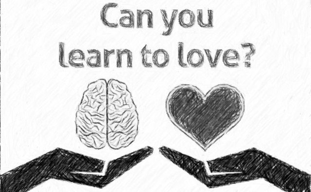
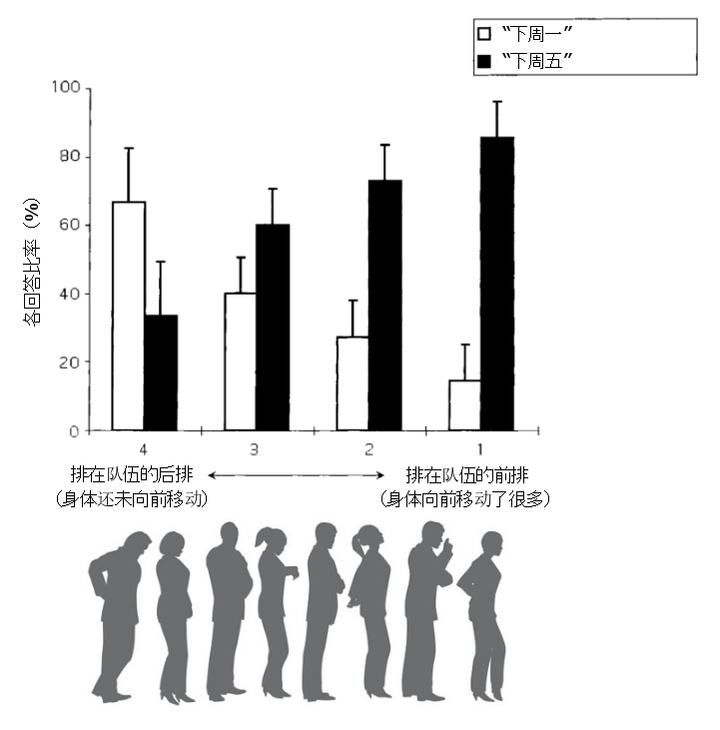
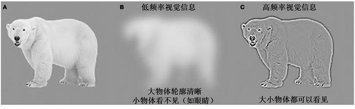
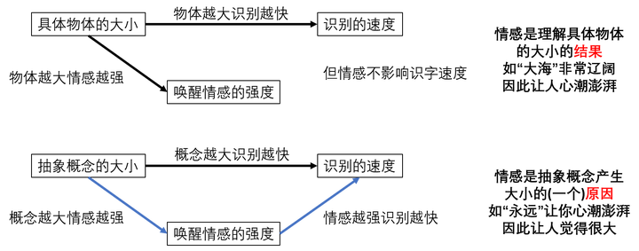
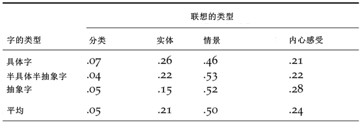

爱情是个永恒的话题。我们因爱而生，为爱而活，随爱离去。爱让我们生活热情，却测不出温度。爱让我们神魂颠倒，却诊断不出疾病。爱是拥抱的温暖，是寄出的信，还是夜晚的梦？爱作为一个抽象概念，她在大脑中是怎样产生意义的呢？
一部分研究者认为爱作为一种抽象概念，在大脑里只能用抽象的符号来代表（如【love】）。但我们在这篇文章讨论过为什么大脑光靠抽象符号是不能有效的产生意义的。另一些研究者则认为大脑需要和现实经历相联系，才能有效的建立抽象概念（见这篇文章看具体的概念和经历的关系）。
抽象概念如何才能和现实经历联系起来呢？目前学界有三种假说，即大脑可能通过1.隐喻/2.内在情感/3.情景经历来给抽象概念赋予意义。而爱，以这三种方式和经历联系起来，对我们又有什么启发呢？
1. 隐喻（metaphor）假说
大脑可能通过隐喻的方式用具体的感官和运动经历来赋予抽象概念意义。我们的日常用语中，我们经常将好和坏在空间的维度上来表达。例如“高大上”是好的，“矮低俗”是不好的。我们对时间概念的理解竟也是和身体的运动紧密联系起来的。
Boroditsky和Ramscar（2002）想知道大脑是怎么理解“时间”这个抽象概念的。他们想出一个模棱两可的问题：
下周三的会议向前调了两天。那会议是在哪天开？
理论上说，你的回答可以是“下周五”也可以是“下周一”。“下周三向前”可以是向未来前进两天（下周五），也可以是向现在前进两天（下周一）。
作者们肚子饿了，下餐厅吃午饭。到了餐厅，他们发现那里有大约70号人排了长长一队。作者们灵机一动，不如我们就问那些排队的人那个模棱两可的问题：
通知说下周三的会议向前调了两天。你觉的这指的是哪天？
把排队人的回答收集了以后，他们懵了。
回答“下周五”和“下周一”的比率根本不是50/50。更奇怪的是，这个比率还随着排队人在队伍中的相对位置而变化！越是站在前排的人越容易回答“下周五”。而越是刚刚进入队伍的人越容易回答“下周一”（见下图）。

他们发现，对“下周三向前两天”这个时间的理解其实是随着身体向前运动而不断变化的。越是前排的人，在队伍中前进的越多，就越容易将“下周三向前两天”理解为向未来前进两天。而刚刚加入队伍的人还未经历多少向前的运动，则倾向于将“下周三向前两天”理解为向现在前进两天。这个实验说明了大脑可能是以身体向前运动的经历来隐喻时间向前进的概念。虽然这个实验只考虑到时间这个概念，但是我们不难想象其他的抽象概念是可能通过隐喻借用具体经历来产生意义。
2. 情感（emotion）假说
除了通过隐喻的方式，一些抽象概念也可能是以内心的情感经历来具身化的。我们知道具体的物体是可以根据他们的物理体积分出大小的。比如说“大海”和“地球”，就比“细菌”和“米饭”要大。Sereno和同事们(2009)发现大物体的名字如“大海”要比小物体的名字如“细菌”识别起来快。我们理解文字的时候需要激活相关的经历。在激活这些物体的视觉经历的时候，由于大的物体发出低频的视觉信息在大脑视觉皮层中处理比较快，因此大物体的名字识别起来也比较快。大家看下图：

具体的物体的大小可以和视觉经历联系起来。相比之下，**抽象概念在时空中不存在，它有没有大小呢？**从直觉上来讲，“信任”和“永远”就感觉比“痕迹”和“谦卑”要大。同一个概念比如“想法”，在不同的语境下也可大可小。比如我们有的时候说“我喜欢远大的想法”，有的时候说“我的想法微不足道”。那大脑是如何代表抽象概念的大小呢？
大家体验一下，我们在理解“信任”和“永远”的时候有没有一种心潮澎湃，情感被唤醒的感觉？相比之下，理解“痕迹”和“谦卑”所唤醒的情感强度就差得多。也许抽象概念的大小可能是用情感的强度（emotional arousal）来具身化的。越是能唤起情感的概念，我们主观上就越觉得是大的概念。越是让人平静如水的概念，相比之下就感觉比较小。
为了测试这个想法，我和我的同事们 (2013) 选了一组直觉上意思大的抽象字（如“永远”）和一组直觉上意思小的抽象字（如“痕迹”）来比较它们的识别的速度。我们发现和具体的字一样，大概念识别的速度要比小概念要快。但是这个大小的差异没有办法用视觉信息处理的速度来解释。通过分析，我们发现大概念识别速度快一部分的原因是因为其唤醒的情感强。相比之下，大的具体物体虽然也能唤醒情感（如“大海”），但是它和物体的大小对识别速度的影响是相对独立的（请看下图）。这个实验说明了大脑在一定程度上可能是由情感强度的大小来理解抽象概念的大小。那么除了隐喻具身的假说外，我们发现抽象概念也可以通过内心情感的经历来赋予意义。

3. 情景（situation）假说
情景具身假说认为抽象概念的意义是由相关联的事件和情境来产生的。
就拿“民主”来说吧，说起民主大家会想到什么呢？大家可能会联想到，投票表决，少数服从多数，各种竞选活动，国旗，竞选党对骂，媒体报道，等等。这些联想的情景单个来看都各有各的意义。一旦把他们都结合起来，民主这个概念就显得有血有肉了。
为了证明这个假设，Barsalou 和 Wiemer-Hastings 准备了一些具体字（如树，砖头，铅笔，照相机），一些抽象字（如自由，发明，真理），还有一些半具体半抽象的字（如烹饪）。他们找了一组被试让他们在1分钟内联想每个物体/概念都有什么特征。
大家自己可以试一下：先花一分钟联想下***“砖头”****都有什么特征，再花一分中想一下****“自由”****有什么特征*
他们发现越是具体的概念，被试越容易回答相关的物理特征（见下图中的“实体”）。拿“砖头”来说，你可能回答红色，硬，四方形等等。越是抽象的概念，被试越容易回答有关情景和内心感受的特征（见“情景”和“内心感受”）。拿“自由”来说，你可能回答很快活，自己做主，旅行，睡到自然醒等等。这个实验虽然很小，但是展示了一些抽象概念可能是用相关的情景来赋予意义的。

4. 大脑是怎么理解爱的？
我们讨论了抽象概念可以由隐喻的方式借用具体的经历，可以来源于内心的情感经历，也可以联系到相关的情景。这三种方式并不互相排斥的，因此大脑对“爱”这个抽象概念的学习和理解也很有可能是非常的多元化。
比如说，我们可以借用已有的具体的经历来尝试理解爱。比如跑过马拉松的朋友可以用马拉松的经历来理解爱的长度。我们可以用味觉上的酸甜苦辣，平时生活中经历的喜怒哀乐来模拟爱的阴晴圆缺。我们也可以观察和学习各种浪漫的情景（比如通过电影或文学作品）来体验爱的意义。
爱这个抽象概念和具体经历紧密联系对我们有什么启发呢？
1. 就像宇航员上天前在地球体验失重环境一样，爱也是可以通过各种具体的体验来学习和模拟的。
2. 爱是可以涨经验升级的，每一次爱的经历都会赋予爱新的意义。
3. 每个人由于经历不同，对爱的理解也大相径庭。所以爱并没有什么绝对的对错。
你们觉得呢？
参考文献
- Barsalou, L. W., & Wiemer-Hastings, K. (2005). Situating abstract concepts. In D. Pecher & R. Zwaan (Eds.), Grounding cognition: The role of perception and action in memory, language, and thought (pp. 129–163). New York: Cambridge University Press.
- Boroditsky, L., & Ramscar, M. (2002). The roles of body and mind in abstract thought.Psychological Science, 13(2), 185-189.
- Kousta, S.-T., Vigliocco, G., Vinson, D. P., Andrews, M., & Del Campo, E. (2011). The representation of abstract words: Why emotion matters. Journal of Experimental Psychology: General, 140(1), 14–34.
- Sereno, S. C., O’Donnell, P. J., & Sereno, M. E. (2009). Size matters: Bigger is faster. Quarterly Journal of Experimental Psychology, 62(6), 1115–1122.
- Yao, B., Vasiljevic, M., Weick, M., Sereno, M. E., O’Donnell, P. J., & Sereno, S. C. (2013). Semantic Size of Abstract Concepts: It Gets Emotional When You Can’t See It. PLoS ONE, 8(9), e75000.